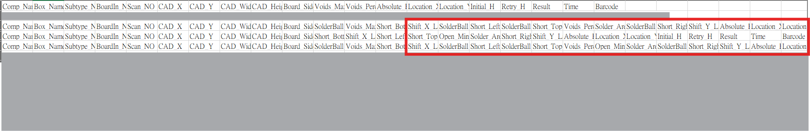
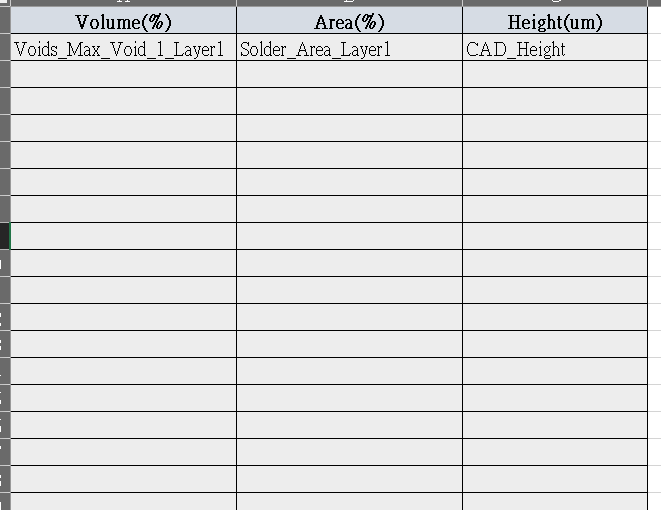
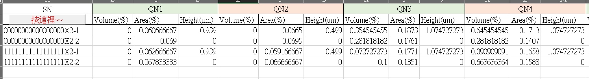

Comp_Name 所在行與目標欄位。點位_1、點位_2），切分第 1 片與第 2 片板子（SN-1 / SN-2）。👉 取代人工肉眼搜尋不同表頭、複製篩選與拉公式的低效步驟。
Comp_Name 為標記之動態表頭_1、_2 分流連片板序號）


👉 幾秒鐘內完成數千行混亂Log的表頭對齊與數據計算。
原本手動流程：開啟龐大 CSV ➔ 尋找隱藏在不同區段的表頭 ➔ 手動篩選 _1 與 _2 拼板 ➔ 逐一設定 AVERAGE 公式計算 Volume/Area/Height ➔ 耗時約 20~30 分鐘且極易因眼睛疲勞而出錯。
自動化巨集：「點選檔案 ➔ 5 秒完成計算」，直接輸出符合客戶格式的標準統計報表，正確率 100%。
Comp_Name）與 Collection 欄位收集PointName|BoardNo）實現數據累加Option Explicit
Sub ImportLog()
Dim FilePath As Variant
Dim wbLog As Workbook
Dim wsLog As Worksheet
' 選擇目標 CSV Log檔
FilePath = Application.GetOpenFilename("CSV Files (*.csv),*.csv", , "請選擇LOG檔")
If FilePath = False Then Exit Sub
Application.ScreenUpdating = False
Application.DisplayAlerts = False
Set wbLog = Workbooks.Open(FilePath, ReadOnly:=True)
Set wsLog = wbLog.Sheets(1)
' 執行核心解析程序
ParseLog wsLog, Dir(FilePath)
wbLog.Close False
Application.ScreenUpdating = True
Application.DisplayAlerts = True
MsgBox "Summary更新完成", vbInformation
End Sub
Private Sub ParseLog(wsLog As Worksheet, ByVal FileName As String)
Dim wsSum As Worksheet, wsCfg As Worksheet
Dim DictTarget As Object, DictData As Object
Dim VolumeHeaders As Collection, AreaHeaders As Collection, HeightHeaders As Collection
Dim Targets As Variant
Dim LastRow As Long, LastCol As Long, r As Long, c As Long, i As Long
Dim ColComp As Long
Dim VoidCols As Collection, AreaCols As Collection, HeightCols As Collection
Dim CompName As String, PointName As String, BoardNo As String, Key As String, FileSN As String
Dim arr As Variant, vCol As Variant, aCol As Variant, hCol As Variant
Dim SumRow1 As Long, SumRow2 As Long
Set wsCfg = ThisWorkbook.Worksheets("Config")
Set VolumeHeaders = New Collection
Set AreaHeaders = New Collection
Set HeightHeaders = New Collection
' 1. 從 Config 載入目標表頭定義
Call LoadConfigHeaders(wsCfg, VolumeHeaders, 1)
Call LoadConfigHeaders(wsCfg, AreaHeaders, 2)
Call LoadConfigHeaders(wsCfg, HeightHeaders, 3)
' 2. 初始化 Summary 分頁
On Error Resume Next
Set wsSum = ThisWorkbook.Worksheets("Summary")
On Error GoTo 0
If wsSum Is Nothing Then
Set wsSum = ThisWorkbook.Worksheets.Add
wsSum.Name = "Summary"
End If
' 3. 初始化點位清單與統計字典
Set DictTarget = CreateObject("Scripting.Dictionary")
Set DictData = CreateObject("Scripting.Dictionary")
' 目標檢查點位 (可依機種需求調整)
Targets = Array( _
"QN1", "QN2", "QN3", "QN4", "QN5", "QN6", "QN7", "QN8", _
"PHAD1", "PHAD21", "PHAD22", "PHAD23", "PHAD24", _
"PHAD27", "PHAD28", "PHAD29", "PHAD30", "PHAD33", _
"U34", "U46", "U50", "U77", "H11", "H13", "H14", _
"DN1", "DN2", "DN3", "DN4", "DN5", "DN6", _
"DN7", "DN8", "DN9", "DN10", "DN11", "DN12", _
"U13", "U17", "U20", "U23", "U49", "U62", "U59", "U31", _
"U71", "U26", "U63", "U64", "U10", "U7", "U33", "U60", "PSTU1")
For i = LBound(Targets) To UBound(Targets)
DictTarget(Targets(i)) = True
Next i
LastRow = wsLog.Cells(wsLog.Rows.Count, 1).End(xlUp).Row
FileSN = FileName
If InStrRev(FileSN, ".") > 0 Then FileSN = Left(FileSN, InStrRev(FileSN, ".") - 1)
' 4. 逐行掃描Log並處理動態表頭
For r = 1 To LastRow
If Trim(wsLog.Cells(r, 1).Value) = "Comp_Name" Then
LastCol = wsLog.Cells(r, wsLog.Columns.Count).End(xlToLeft).Column
ColComp = 0
Set VoidCols = New Collection
Set AreaCols = New Collection
Set HeightCols = New Collection
For c = 1 To LastCol
If Trim(wsLog.Cells(r, c).Value) = "Comp_Name" Then ColComp = c
If IsMatchHeader(Trim(wsLog.Cells(r, c).Value), VolumeHeaders) Then VoidCols.Add c
If IsMatchHeader(Trim(wsLog.Cells(r, c).Value), AreaHeaders) Then AreaCols.Add c
If IsMatchHeader(Trim(wsLog.Cells(r, c).Value), HeightHeaders) Then HeightCols.Add c
Next c
Else
' 解析點位與拼板編號
If ColComp > 0 Then
CompName = Trim(wsLog.Cells(r, ColComp).Value)
If InStrRev(CompName, "_") > 0 Then
PointName = Left(CompName, InStrRev(CompName, "_") - 1)
BoardNo = Mid(CompName, InStrRev(CompName, "_") + 1)
If DictTarget.Exists(PointName) Then
Key = PointName & "|" & BoardNo
If Not DictData.Exists(Key) Then
' 陣列存放：[Vol總和, Vol次數, Area總和, Area次數, H總和, H次數]
DictData.Add Key, Array(0#, 0, 0#, 0, 0#, 0)
End If
arr = DictData(Key)
' 數值累計
For Each vCol In VoidCols
If Trim(wsLog.Cells(r, vCol).Text) <> "" Then
arr(0) = arr(0) + Val(wsLog.Cells(r, vCol).Text)
arr(1) = arr(1) + 1
End If
Next vCol
For Each aCol In AreaCols
If Trim(wsLog.Cells(r, aCol).Text) <> "" Then
arr(2) = arr(2) + Val(wsLog.Cells(r, aCol).Text)
arr(3) = arr(3) + 1
End If
Next aCol
For Each hCol In HeightCols
If Trim(wsLog.Cells(r, hCol).Text) <> "" Then
arr(4) = arr(4) + Val(wsLog.Cells(r, hCol).Text)
arr(5) = arr(5) + 1
End If
Next hCol
DictData(Key) = arr
End If
End If
End If
End If
Next r
' 5. 建構報表表頭 (首次建置)
If wsSum.Cells(1, 1).Value = "" Then
wsSum.Cells(1, 1).Value = "SN"
c = 2
For i = LBound(Targets) To UBound(Targets)
wsSum.Range(wsSum.Cells(1, c), wsSum.Cells(1, c + 2)).Merge
wsSum.Cells(1, c).Value = Targets(i)
wsSum.Cells(2, c).Value = "Volume(%)"
wsSum.Cells(2, c + 1).Value = "Area(%)"
wsSum.Cells(2, c + 2).Value = "Height(um)"
c = c + 3
Next i
End If
' 6. 計算平均值並寫入 Summary 表
SumRow1 = wsSum.Cells(wsSum.Rows.Count, 1).End(xlUp).Row + 1
If SumRow1 < 3 Then SumRow1 = 3
SumRow2 = SumRow1 + 1
wsSum.Cells(SumRow1, 1) = FileSN & "-1"
wsSum.Cells(SumRow2, 1) = FileSN & "-2"
c = 2
For i = LBound(Targets) To UBound(Targets)
' 板 1 數據
Key = Targets(i) & "|1"
If DictData.Exists(Key) Then
arr = DictData(Key)
If arr(1) > 0 Then wsSum.Cells(SumRow1, c) = arr(0) / arr(1)
If arr(3) > 0 Then wsSum.Cells(SumRow1, c + 1) = arr(2) / arr(3)
If arr(5) > 0 Then wsSum.Cells(SumRow1, c + 2) = arr(4) / arr(5)
End If
' 板 2 數據
Key = Targets(i) & "|2"
If DictData.Exists(Key) Then
arr = DictData(Key)
If arr(1) > 0 Then wsSum.Cells(SumRow2, c) = arr(0) / arr(1)
If arr(3) > 0 Then wsSum.Cells(SumRow2, c + 1) = arr(2) / arr(3)
If arr(5) > 0 Then wsSum.Cells(SumRow2, c + 2) = arr(4) / arr(5)
End If
c = c + 3
Next i
wsSum.Columns.AutoFit
End Sub
Config 分頁動態載入表頭清單，程式彈性大IsMatchHeader）' 從 Config 工作表加載表頭清單至 Collection
Private Sub LoadConfigHeaders(wsCfg As Worksheet, HeaderList As Collection, ColNo As Long)
Dim r As Long
r = 2
Do While Trim(wsCfg.Cells(r, ColNo).Value) <> ""
HeaderList.Add Trim(wsCfg.Cells(r, ColNo).Value)
r = r + 1
Loop
End Sub
' 忽略大小寫之表頭模糊匹配判定
Private Function IsMatchHeader(HeaderText As String, HeaderList As Collection) As Boolean
Dim v As Variant
For Each v In HeaderList
If UCase(Trim(HeaderText)) = UCase(Trim(v)) Then
IsMatchHeader = True
Exit Function
End If
Next v
End Function
Comp_Name 座標錨定技術即時切換目標欄位，絕不會錯抓鄰近數據。_1 / _2）將混在同一張 Log 裡的兩片板子資料乾淨分離，自動化完成（SN-1、SN-2）統計格式。